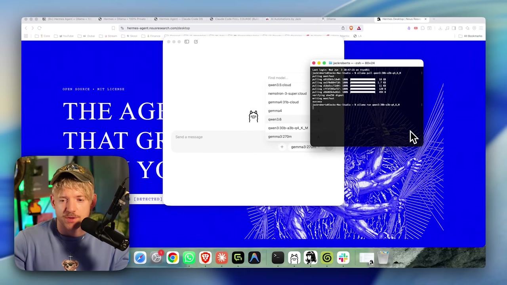

📦 O que e o Ollama e os modelos abertos
Para rodar um LLM na sua maquina, voce precisa de duas coisas: um programa que sabe carregar e servir o modelo, e o modelo em si. O programa e o Ollama; os modelos sao os "abertos" (Qwen, Gemma, Mistral...). Este modulo explica o que e cada um e como eles conversam.
📦 O que e o Ollama
No modulo 1.2 separamos o LLM (o cerebro) da telinha de chat. Mas o cerebro nao roda sozinho: alguem precisa baixar o arquivo do modelo, carrega-lo na memoria e ficar pronto para responder. Esse "alguem" e o Ollama — o programa que gerencia e roda modelos abertos na sua maquina.
Novo aqui? Ollama e um software gratuito que voce instala (Mac, Windows ou Linux). Pense nele como uma "central de modelos": com ele voce baixa um LLM, conversa com o modelo e troca de modelo quando quiser — tudo localmente. Termo tecnico para esse papel: um runtime, ou seja, o programa que faz o modelo de fato EXECUTAR.
O Ollama vem em duas portas de entrada, e voce usa a que preferir: um app com janela (clica e conversa, como um chat comum) e o terminal (digita comandos curtos). As duas falam com o mesmo motor por baixo — sao so duas formas de pedir a mesma coisa.

Conceitos-chave
Programa que baixa, gerencia e roda modelos localmente.
O motor que faz o modelo de fato executar na maquina.
Duas portas para o mesmo motor; use a que preferir.
Instalacao livre em Mac, Windows e Linux.
🔓 Modelos abertos
O Ollama e o programa; os modelos abertos sao o que ele roda. "Aberto" aqui significa de pesos abertos (open weights): o arquivo do modelo pode ser baixado e usado por qualquer pessoa, de graca, na propria maquina. E o que torna o local possivel — sem isso, voce dependeria sempre do servidor de uma empresa.
Novo aqui? Os pesos ("weights") sao os numeros que o modelo aprendeu no treino — o "conhecimento" dele, num arquivo. Um modelo fechado (como os da OpenAI) guarda esses pesos no servidor e voce so acessa por API. Um modelo de pesos abertos publica o arquivo: voce baixa e roda onde quiser. E por isso que "aberto" e a chave do curso.
Familia da Alibaba; o curso usa o Qwen3 (versoes 30B-A3B e 32B).
Familia aberta do Google; citado o Gemma 3 27B.
Modelos franceses; citado o Mistral Small 3.2 24B.
Familia aberta forte em raciocinio, tambem mencionada.
🌱 Por que ter varios modelos e bom
Cada familia tem forcas diferentes (um e melhor em codigo, outro em texto, outro e mais leve). Como sao abertos e gratuitos, voce pode baixar varios, testar e ficar com o que serve. Essa liberdade de troca e algo que o modelo fechado nao da.
Conceitos-chave
De pesos abertos: pode ser baixado e rodado por qualquer um.
Os numeros aprendidos no treino — o "conhecimento" do modelo.
Fechado fica no servidor; aberto voce baixa.
Qwen, Gemma, Mistral, DeepSeek — cada uma com forcas.
⬇️ Baixa uma vez, roda local
Aqui esta o detalhe que muda tudo no custo: voce baixa o modelo UMA vez. Depois disso, o arquivo mora no seu disco e roda local — sem nova conexao, sem nova cobranca. E a diferenca entre comprar um livro (paga uma vez, le sempre) e alugar por pagina lida.
Download (uma vez)
O Ollama puxa o arquivo do modelo da internet. E o unico passo que precisa de rede — e pode ser pesado (alguns modelos passam de 15 GB).
Fica no disco
O modelo passa a ser seu arquivo local. Voce pode listar o que ja baixou com ollama list e apagar o que nao usa.
Roda offline, gratis
A partir daqui, cada conversa acontece na sua maquina — sem internet e sem custo por uso, para sempre.
ollama listNovo aqui? O terminal e aquela tela de texto onde voce digita comandos. Cada comando do Ollama comeca com a palavra ollama seguida do que voce quer (list, run, pull...). Voce so vai usar de verdade na Trilha 2; por enquanto, basta reconhecer o padrao.
Conceitos-chave
So o primeiro passo precisa de internet.
O modelo vira seu; ocupa espaco (pode ser GBs).
Mostra os modelos ja baixados.
Depois de baixar, cada conversa e gratuita.
🗂️ Como o Ollama serve o modelo
Aqui vem a peca que liga tudo. Quando o Ollama esta rodando, ele nao fica so esperando voce abrir o app: ele mantem um servico local ligado em segundo plano, com um endereco na sua propria maquina. Qualquer programa nesse computador pode mandar um pedido para esse endereco e receber a resposta do modelo.
Novo aqui? Um endpoint (ou "endereco do servico") e como uma campainha local: um lugar fixo onde outro programa "toca" para pedir algo. O do Ollama mora na propria maquina (em localhost — "esta maquina aqui"), entao o pedido nunca sai do computador. E EXATAMENTE assim que o Hermes vai falar com o seu modelo na Trilha 2.
Siga as setas: o Hermes faz o pedido ao servico do Ollama, que carrega o modelo e devolve a resposta — tudo dentro da caixa tracejada (a sua maquina). Esse e o cano que voce vai ligar no modulo 2.5.
Conceitos-chave
O Ollama fica ligado em segundo plano, pronto.
O endereco onde outros programas pedem respostas.
"Esta maquina" — o pedido nunca sai do computador.
E por esse endpoint que o agente fala com o modelo.
🔢 Parametros: o que significa o "B"
Voce vai ver nomes como Qwen3 32B ou Gemma 3 27B. Esse "B" e a primeira coisa a entender ao escolher um modelo: ele indica os parametros, em bilhoes. Em linhas gerais, mais parametros = modelo mais capaz, porem mais pesado.
Novo aqui? Parametros sao os "ajustes internos" que o modelo aprendeu — sao os tais pesos do topico 2, agora contados. "32B" quer dizer 32 bilhoes deles. Como cada parametro ocupa espaco na memoria, o "B" tambem e uma pista de quanta RAM o modelo vai pedir. (RAM = a memoria de trabalho do computador; detalhamos no modulo 1.4.)
A barra cresce com o "B": o de ~8B e leve e rapido, os de 27-32B (os do video) sao o equilibrio, e os 70B+ sao mais capazes mas pedem bem mais memoria. "Maior" nem sempre e o certo para a SUA maquina.
📊 Cuidado com a leitura
Mais "B" nao e automaticamente melhor para voce: um modelo grande demais nao cabe na sua memoria e pode nem rodar. O numero certo e o que entrega boa qualidade DENTRO do que seu hardware aguenta — assunto do modulo 1.4 e da escolha pratica na Trilha 2.
Conceitos-chave
Os ajustes internos aprendidos; o "B" os conta em bilhoes.
32 bilhoes de parametros, por exemplo.
Mais parametros pedem mais RAM e ficam mais lentos.
O melhor "B" depende do seu hardware, nao do maior numero.
🆚 Ollama (local) vs nuvem
Para fechar o vocabulario, vale comparar de frente. Usar um modelo pelo Ollama e usar um modelo pela nuvem resolvem o mesmo problema (gerar texto), mas em lugares e condicoes bem diferentes.
✓ Ollama (local)
- ✓Modelo no seu disco; dados nao saem.
- ✓Gratis apos baixar; roda offline.
- ✓Voce escolhe e troca de modelo livremente.
- ✓Limitado pela RAM e pelo chip da sua maquina.
✗ Nuvem (modelo de API)
- ✗Dados trafegam para o servidor da empresa.
- ✗Cobra por uso e exige internet.
- ✗Voce nao controla o modelo nem mudancas de regra.
- ✓Em troca: costuma ser mais potente nas tarefas dificeis.
Sem ideologia: como vimos no 1.1, nao e "Ollama sempre". A nuvem ganha em tarefas pesadas; o local ganha em privacidade, custo e offline. O Hermes deixa voce usar os dois — e os tres modos do 1.6 sao justamente como alternar entre eles.
Conceitos-chave
Privado, gratis, offline; preso ao seu hardware.
Potente, mas paga, online e com dados saindo.
Os dois geram texto; mudam o lugar e as condicoes.
O Hermes alterna entre local e nuvem (modulo 1.6).
Auto-checagem (opcional): qual e a relacao entre o Ollama e um modelo como o Qwen3?
🎯 Resumo do modulo
Proximo modulo:
1.4 — Janela de contexto e parametros